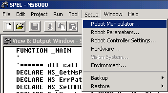
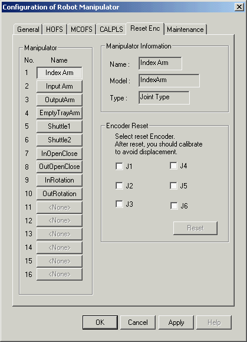

Service History
Subject: NS-8040 (NS80-21) Encoder backup alarm error
Handler Model: NS-8040 (S/N: 181208)
Controller: RC520 (S/N: 03-00504)
Date: 28 Jul 2011
Symptom
NS-8040(NS80-21) Encoder backup alarm error.
Action
Actually, can use the AutoTeach.exe utility (C:\NS8000\Tool\AutoTeach.exe) to calibrate each robot but it seem strange that NS80-21 cannot use this utility.
1) In SPEL CT, software reset encoder for all robots (Setup-> Robot Manipulator...)
|
 |
 |
2) Move the robot to it's mechanical hardstop position and key in the calibration pulse using CALPLS & CALIB commands.
Below pulse value based from backup
Rb1
Axis 2: -33484
Axis 3: 93968
Axis 4: 85292
Rb2
Axis 1: -12890
Axis 2: -32715
Rb3
Axis 1: -853749
Axis 2: -31265
Rb4
Axis 1: -110706
Rb5
Axis 1: -34308
Rb6
Axis 1: -32384
Remarks